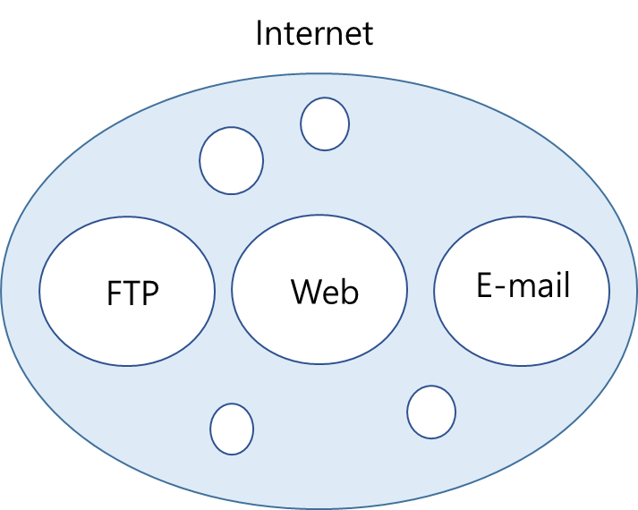

인터넷 과 웹

인터넷(Internet)이 도로라면 웹(Web)은 도로 위를 달리는 자동차 한 대이다.
벤다이어그램으로는 그림처럼 인터넷(Internet)이라는 통신망 안에서 웹(Web), 이메일(E-Mail) 등을 사용하고 있다는 것이다.
인터넷은 1960년에 미국에서 군사적 목적으로 분산된 통신시스템을 구축하는 과정에서 만들어진 것이고,
웹은 1990년에 스위스 유럽입자물리연구소 팀 버너스 리라는 분이 인터넷에서 활용할 수 있는 세계 최초 웹브라우저를 만들었다고 한다.
이 웹브라우저의 이름이 그 유명한 "따따따"-"WWW"-월드와이드웹(World Wide Web)이라고 한다.